Herramientas de Repostería
Básicas e indispensables
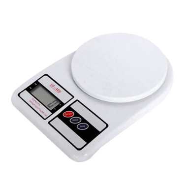
Báscula de cocina
Para medir ingredientes con precisión.
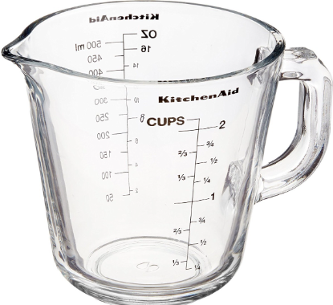
Tazas y cucharas medidoras
Útiles para medidas rápidas.
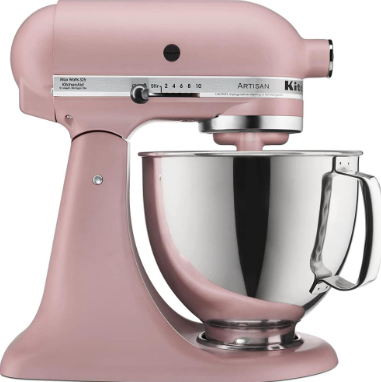
Batidora de pie o de mano
Facilita mezclar y lograr texturas perfectas.
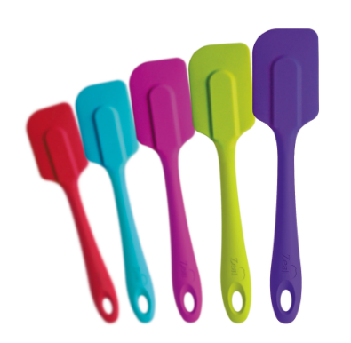
Espátula de silicona
Ideal para raspar y mezclar sin dañar recipientes.
Herramientas específicas
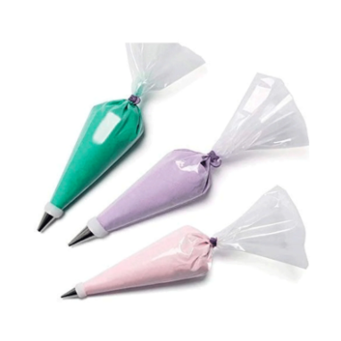
Mangas pasteleras y boquillas
Para decorar pasteles y cupcakes.
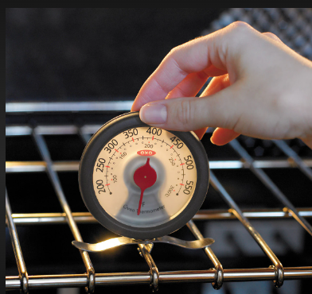
Termómetro de horno
Asegura la temperatura exacta.
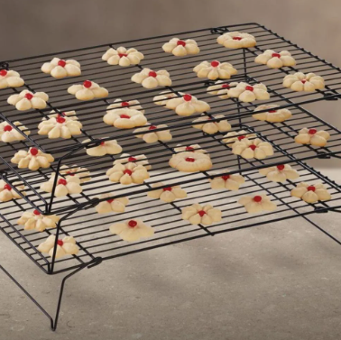
Rejilla de enfriamiento
Permite que los pasteles se enfríen uniformemente.
Extras para perfeccionar
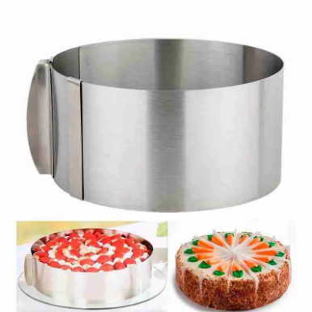
Molde ajustable
Para hacer pasteles de varios tamaños.
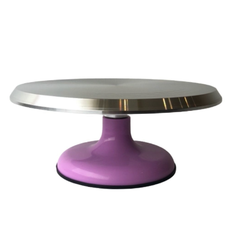
Giratorio para decoración
Facilita decorar los pasteles.
Kits especializados
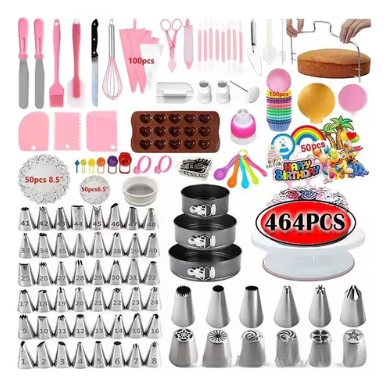
Kit de decoración de pasteles
Incluye boquillas, mangas y más.
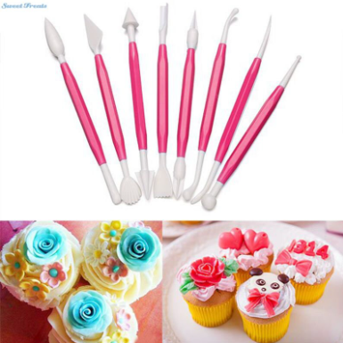
Kit para fondant
Ideal para modelar y cortar fondant.